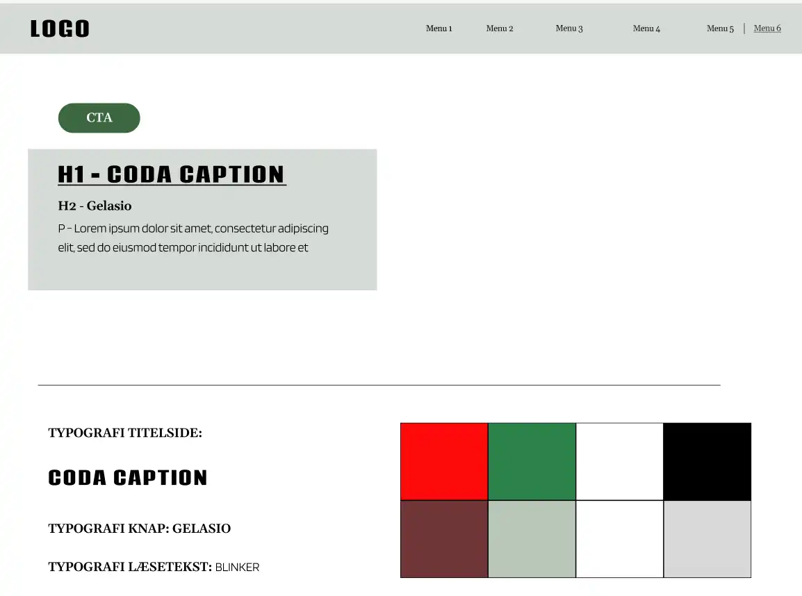
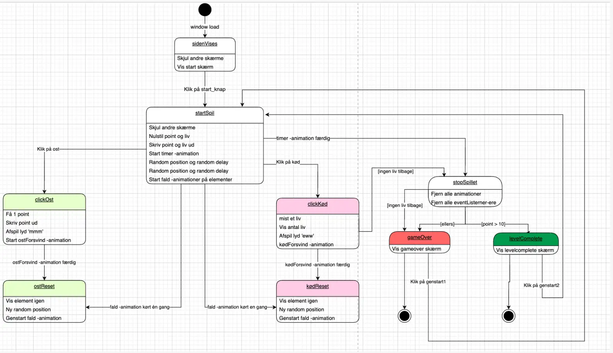
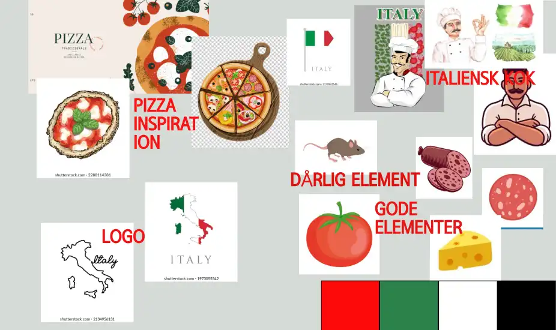
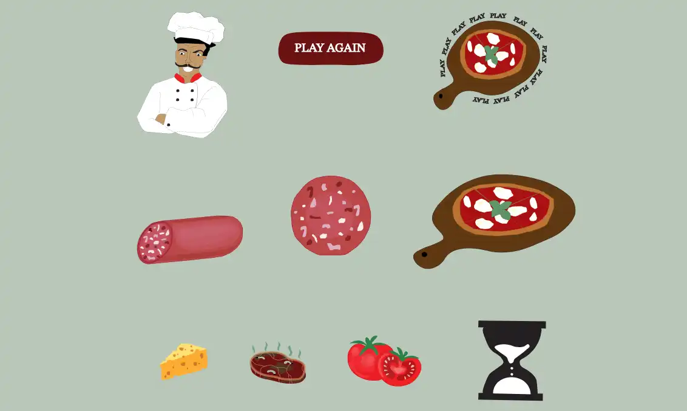

GRUNDLÆGGENDE ANIMATION
I dette forløb har jeg lært om animation. Dette forløb startede med at vi selv skulle brainstorme os frem til en spil-ide, som vi skulle kode os til ved hjælp af html, css og javascript. Jeg valgte spil-ideen 'Fabiano's pizzaria', som går ud på at man skal hjælpe fabiano med at lave pizzaer til hans kunder, ved at trykke på de gode elementer og undvige de dårlige elementer.
Processen started ud med skitser af spilleskærmen og gode/dårlige elementer. Herefter blev der designet styletiles, moodboard og derefter et aktivitetsdiagram og State Machine diagram med oversigt over spillets funktioner. I dette forløb lærte jeg en hel del om Adobe illustrator, da alle elementer samt spilleskærme er tegnet der.


